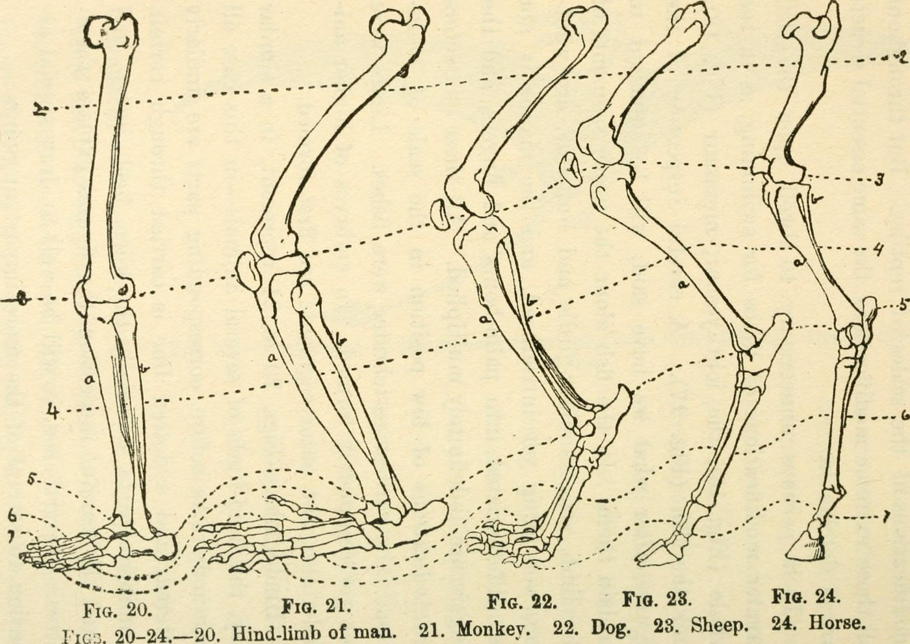

Sintesi
Individuare il talo/astragalo nel piede, capire la sua posizione nel tarso e riconoscere che un osso comparabile esiste anche in altri mammiferi, anche se la loro zampa non ha la stessa forma del nostro piede.
Attività 1
Cerca un osso del piede nell'essere umano e in diversi animali.
Pronto per il test con revisione adulta.
Individuare il talo/astragalo nel piede, capire la sua posizione nel tarso e riconoscere che un osso comparabile esiste anche in altri mammiferi, anche se la loro zampa non ha la stessa forma del nostro piede.

Talus / astragalus highlighted for anatomical vocabulary.
BodyParts3D / DBCLS, CC BY-SA 2.1 JP, via Wikimedia Commons.

Comparison with a sheep foot: the aim is to locate a comparable region.
Caroline Eroline, CC BY-SA 4.0, via Wikimedia Commons.

Tavola storica del 1922: utile per confrontare, non è un riferimento anatomico moderno.
Internet Archive Book Images, no known restrictions, via Wikimedia Commons.
Alla fine dell'attività, gli alunni dovrebbero saper indicare la regione del tarso in cui si trova il talo/astragalo, spiegare perché non coincide semplicemente con il tallone visibile e fornire due indizi per giustificarne la posizione nell'essere umano e nel confronto con un altro mammifero.
Presentare l'osso isolato e chiedere: "Dove potrebbe nascondersi questo osso nel piede? Perché?" Non dare subito la risposta.
Gli alunni annotano ciò che vedono: forma generale, cavità, rilievi, superfici e possibile orientamento.
Cerchiano una regione probabile del piede o dell'arto e indicano almeno un indizio.
Trasferiscono il riferimento al piede o allo scheletro di un altro mammifero, per esempio la pecora.
Ogni gruppo formula una frase con due indizi e precisa che cosa resterebbe da verificare con uno schema moderno o uno scheletro reale.
In museo, l'attività può funzionare come breve postazione davanti a una vetrina, fotografia, scheletro o replica. Il mediatore può chiedere ai visitatori di cercare una regione dell'arto invece di un osso isolato. La consegna importante è giustificare con indizi visibili, senza manipolare oggetti patrimoniali se le regole del museo non lo autorizzano.
Domande utili: "Quale parte dell'arto osservate?", "Quali indizi vi fanno pensare a questa zona?", "Che cosa bisognerebbe vedere in più per essere più sicuri?"
Versione attuale: pronta per essere testata con le immagini pubblicabili disponibili. Permette già di lavorare su osservazione, localizzazione e giustificazione.
Obiettivo finale: aggiungere uno schema moderno validato del piede umano che mostri chiaramente il tarso e la posizione del talo/astragalo, poi finalizzare la correzione con una rilettura scientifica.
Le pagine HTML stampabili dell'attività 1 sono tradotte come prova.
Crediti e stato scientifico restano collegati alle pagine fonte francesi e ai crediti del progetto. Questa traduzione non deve rendere più definitiva alcuna affermazione.